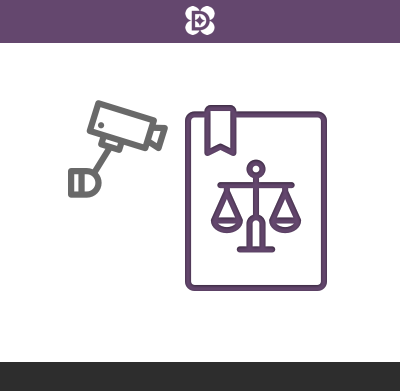

Nos projets

L'agora permanente
<<<<<<< HEADLa plateforme participez.nanterre.fr est une application reposant entièrement sur des briques logicielles open source telles que Drupal, Timeline.js et bien sûr DemocracyOS. Grâce à ce site les citoyens peuvent se tenir informés et contribuer aux différentes campagnes de concertation en cours en gardant une visibilité claire sur l’avancée du processus de décision grâce à la ligne de temps interactive.
=======La plateforme participez.nanterre.fr est une application reposant entièrement sur des briques logicielles open source telles que Drupal, Timeline.js et bien sûr DemocracyOS. Grâce à ce site, les citoyens peuvent se tenir informés et contribuer aux différentes campagnes de concertation en cours, en gardant une visibilité claire sur l’avancée du processus de décision grâce à la ligne de temps interactive.
>>>>>>> dev-2
Compte-rendu de mandat mairie de Paris
Mise en place d'une plateforme pour la mairie de Paris où les citoyens ont pu réagir sur différentes thématiques (logement, jeux olympiques, gaspillge, etc.) et poser des questions directement à la Maire. Les élus pouvaient ensuite répondre aux citoyens, un badge "Élu(e)" les rendant visibles sur la plateforme.

Instance du collectif #MAVOIX
Le collectif #MAVOIX qui souhaite faire élire des députés augmentés, tirés au sort et s'engagent à voter selon l'opinion exprimée sur une plateforme en ligne, prend ses décisions sur une plateforme DemocracyOS que nous avons mis à leur disposition depuis fin 2015. C'est sur cette instance qu'ils ont décidé à 82% de faire campagne lors des législatives partielles de Strasbourg, en mai 2016.

OpenCop.org
Permettre aux citoyens du monde entier de contribuer et de débattre sur une simplification du texte des négociation de la COP21. OpenCop.org a été porté par DemocracyOS France et Democracy 2.1, et a permis à 1200 citoyens de 40 pays de donner leur vision de ce qui est nécessaire pour relever le défi du changement climatique.

Loi renseignement
Alors que le projet de loi renseignement était débattu au Parlement, nous avons mis en ligne une version simplifiée du texte centrée sur trois enjeux : les boîtes noires, la CNCTR et les objectifs du projet de loi. La communauté réunie s'est positionnée à 86% contre le texte, contre 77% des députés qui se sont exprimés en sa faveur.

Réforme des collèges
Suite au succès de la première plateforme mise en place sur le projet de loi renseignement, nous avons réitéré sur la réforme des collèges avec une simplification du texte de la réforme. Nous avons ciblé plusieurs points de désaccord : les EPI, les langues anciennes, les classes européennes, les classes bilangues et l'autonomie des établissements.